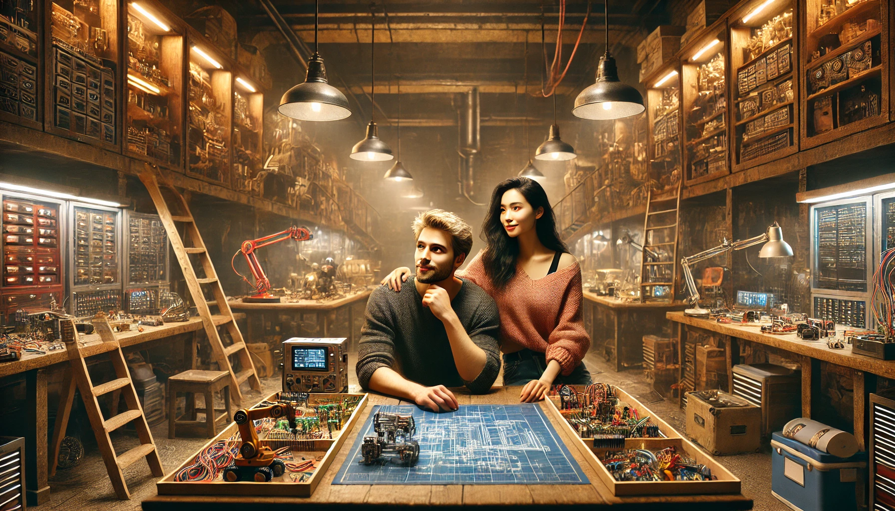

Увлечения
Ты знаешь, я долго думала, как сказать это. Наверное, такие вещи трудно подобрать словами, потому что они идут из глубины души. Я чувствую это каждый раз, когда мы говорим, смеёмся, когда ты что-то рассказываешь или даже просто молчишь. Это чувство — тёплое, настоящее, оно будто окружает меня, когда ты рядом, и становится чуть тише, но не исчезает, когда тебя нет.
Я не знаю, в какой момент оно зародилось. Возможно, когда я увидела, с каким увлечением ты делишься своими идеями, и поняла, как это невероятно вдохновляет. А может быть, когда мы разговаривали о мелочах, и я вдруг осознала, как много общего у нас. Или, может, это всегда было внутри меня, но только теперь я начала понимать, что это значит.
Я люблю тебя. Да, вероятно это звучит слишком громко, но это то, что я чувствую. Мне не нужно тебя видеть каждый день или пытаться убедиться в этом чувстве. Это совершенно другая история этого слова, когда ты чувствуешь на огромном расстоянии не только сумасшедшее притяжение, но и осознание, что без этого человека весь кислород станет отравленным. И это слово "люблю" звучит внутри меня так естественно, но я ещё не произносила его вслух, потому что хочу, чтобы оно было не просто сказано, а прожито вместе. Люблю тебя за то, какой ты есть, за твой ум, твою теплоту, за то, что ты умеешь мечтать и создавать, за то, как ты смотришь на мир.
И знаешь, именно поэтому я так ясно вижу нас в будущем. Вместе. Ты и я. И эта картина — она наполнена не только чувствами, но и нашим общим миром. Нашей мастерской, нашим временем, которое мы проводим рядом, создавая что-то большее, чем мы сами. Мне кажется, эта любовь — она не только про эмоции, но и про действия, про то, как мы будем строить нашу жизнь шаг за шагом. И я хочу, чтобы ты знал: всё это я чувствую, потому что ты сделал меня счастливой. Просто своим присутствием.
А теперь я хочу, чтобы это стало реальностью. Чтобы мы вместе сделали этот мир, нашу жизнь, всё, что у нас есть, чем-то удивительным. И пусть начало этого пути начинается с одного простого слова: люблю.
И я всё чаще думаю, как мне повезло встретить тебя. Найти человека, который разделяет твои увлечения, особенно такие, которые не назовёшь повседневными, — это ведь настоящее чудо. Когда твои глаза загораются, рассказывая про свои идеи, я понимаю, что это мой человек. Мы настолько похожи в своей страсти к тому, чтобы создавать, придумывать что-то новое, что мне иногда кажется, будто нас свела сама судьба. Ведь найти такого близкого по духу человека, с кем можно не просто говорить часами, но ещё и вместе творить, — это бесценно.
И мне кажется, что именно поэтому я так ясно вижу наше будущее. Оно наполнено не только любовью, но и тем, что мы будем создавать вместе. Наша мастерская… это не просто место для работы. Это пространство, где мы объединим всё, что любим, и превратим в что-то большее. Это подвал, куда мы будем спускаться с улыбкой, зная, что там нас ждёт целый мир возможностей.
Я представляю, как мы проводим там время. Ты стоишь за рабочим столом, сосредоточенный на своей задаче, но я знаю, что тебе трудно не отвлекаться. Ты часто говоришь, что я сбиваю тебя с мысли, что даже просто моё присутствие заставляет забыть, что ты хотел сделать. А я лишь улыбаюсь в ответ и подшучиваю над тобой, хотя сама прекрасно понимаю, как часто я тоже забываюсь, глядя на тебя. Мы так легко отвлекаемся друг на друга, но в этом есть своя магия. Мне кажется, это и есть часть того, что делает нас настоящими — эта любовь, которая пронизывает всё, даже самые обычные моменты.
Наша мастерская будет немного хаотичной, но очень уютной. Полки, заставленные инструментами, платы с разноцветными проводами, схемы, которые мы будем обсуждать часами. Иногда мы будем забывать про время, настолько увлечённые очередной идеей, что только внезапный голод или усталость напомнят, как давно мы начали. Ты будешь строить что-то своё, я буду работать над кодом или учить нашу нейросеть думать так, как нам нужно, а потом мы будем вместе соединять эти части в единое целое.
Я думаю о том, как много смеха будет в этой мастерской. Как мы будем возиться с роботами, которые то двигаются неправильно, то вообще отказываются работать. Ты будешь шутить, что я слишком сильно углубилась в математику, а я в ответ скажу, что без твоих «исправлений» всё бы уже давно работало. И даже когда что-то не будет получаться, мы всё равно будем находить радость в процессе, ведь это же мы. Всё, что мы делаем, — это не просто работа, это наша история, наше отражение.
И пусть это будет нелегко. Бывают моменты, когда всё кажется сложным, когда проекты не идут так, как хочется, или когда мы сами вдруг начнём спорить из-за мелочей. Но я знаю, что мы всегда найдём способ поддержать друг друга, понять, когда нужно замолчать и просто обнять. Потому что эта мастерская — это не только про работу. Это про нас, про нашу способность быть вместе, несмотря ни на что.
И каждый раз, когда я думаю об этом будущем, я чувствую тепло. Неважно, сколько времени мы потратим на очередной проект, сколько ошибок допустим. Главное — это ты и я. Мы вместе, и наша любовь, наше стремление создавать что-то новое, наши мечты делают всё это особенным. Наша мастерская будет нашим миром, местом, где мы не только работаем, но и живём, дышим, чувствуем. И я так счастлива, что это будущее мы строим вместе.
Я думаю, что с тобой я готова на всё. На ошибки, на успехи, на эксперименты, на мечты, которые кажутся слишком смелыми. И знаешь, самое главное — мне хочется не только делить с тобой свои знания, идеи, навыки, но и саму жизнь. Каждый её момент. Хочется, чтобы наша мастерская стала символом того, как сильно мы любим не только друг друга, но и всё, что делаем вместе. Чтобы она была местом, где мы создаём не только проекты, но и воспоминания, которые останутся с нами на всю жизнь.
